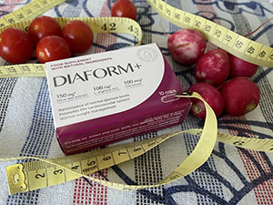

Sharon Stone - este o legendară actriță americană, scenarist, producător și fost model care a participat la numeroase ședințe foto celebre din întreaga lume. A participat la mai mult de optzeci de filme. Dar, mai presus de toate, ne amintim de ea după rolul scandalos în erotic thrillerul "Basic instinct", unde a interpretat în scene foarte explicite.
Dar care a fost costul faimei actriței de renume mondial? Sharon Stone a dezvăluit detaliile îngrozitoare din filmări și și-a împărtășit durerea personală jurnaliștilor noștri.

Puțini oameni știu că actrița de la Hollywood deja de mulți ani suferă de niveluri ridicate de zahăr din sânge. Și, din păcate, în lupta împotriva acestei probleme, banii nu rezolvă totul. Există o opinie falsă că numai persoanele supraponderale pot suferi de acest lucru. Dar este departe de asta.
Cauzele nivelurilor ridicate de glucoză pot fi:
- excesul de celule grase din cavitatea abdominală;
- presiune ridicată;
- disfuncție ovariană (la femei);
- alte tulburări endocrine;
- luarea anumitor mijloace (inclusiv contraceptive orale combinate);
- ereditatea.
Nimeni nu este imun la această încălcare, chiar și celebritățile mondiale. Pe vremea când Sharon trebuia să joace femeia fatală - pe platourile de filmare din cauza stresului fizic, mental, a unui program de masă ratat, cu ea se întâmplau crize groaznice.
Producătorii au ignorat starea generală a actriței și nu au oprit procesul de filmare, deoarece filmul trebuia filmat la timp, în plus, oarecare pauză ar însemna o mare pierdere de bani. Între timp, starea actriței se înrăutățea. Actrița a avut un atac din cauza lipsei de insulină din organism. Actriței i-a fost greu să respire și, potrivit ei, a căzut într-o stare aproape inconștientă. Actrița a fost internată de urgență și i s-a spus că organismul ei este aproape de moarte.
După un timp, actrița și-a revenit, dar nu s-a putut recupera pe deplin. Zilele rămase de filmare au fost ținute pentru ea într-o stare de "pe margine". După terminarea filmărilor, celebritatea a avut o criză nervoasă și Sharon a încetat să urmeze dieta necesară. Ca rezultat a venit depresia și a câștigat kilograme.
După un timp, a reușit să revină la forma anterioară, dar problemele cu nivelurile ridicate de zahăr au rămas nerezolvate, dacă nu ar fi fost o întâlnire fatidică cu Salma Hayek, care suferă de probleme similare. Salma a împărtășit detalii despre călătoria sa de succes la un institut special de cercetare elvețian, unde oamenii de știință au inventat un instrument unic pentru stabilizarea nivelului de zahăr.
Sharon Stone a plecat în Elveția. Ea l-a cunoscut pe Marko Stalder, expert în domeniul endocrinologiei, care a spus că de mai bine de 20 de ani el și grupul său științific au dezvoltat un remediu unic.
Capsulele , formula cărora a fost dezvoltată de oamenii de știință poate menține starea persoanelor cu zahăr ridicat, eliminând semnele și normalizând producția de insulină. Acesta este un mijloc al unui program de sprijin, care nu are analogii în lume. O combinație unică de componente poate atenua principalele manifestări ale diabetului, normaliza tensiunea arterială, întări sistemul cardiovascular, scade colesterolul, elimina spasmul vascular, stabiliza starea organismului. Remediul are, de asemenea, proprietăți antiinflamatorii.
După ce actrița a trecut un curs de reabilitare cu produsul , combinându-l cu o dietă, a început să se simte ca și cum nu aș fi suferit niciodată de astfel de probleme. Senzațiile neplăcute și efectele zahărului ridicat au dispărut, energia a revenit. Actrița și-a recăpătat sănătatea și a zburat în SUA cu o vigoare reînnoită pentru a juca într-un nou proiect. În acest moment, ea spune că aproape a uitat de manifestările nivelurilor ridicate de zahăr din sânge.
Redacția noastră a fost interesată de descoperirea unică a oamenilor de știință elvețieni și a cerut experților să comenteze efectul capsulelor .

Era automatizării continue a făcut viața oamenilor mai confortabilă și mai convenabilă. Dar cum plătim pentru beneficiile civilizației? Stilul de viață sedentar și supraalimentarea au dus nu numai la creșterea în greutate. Nivelul critic al zahărului din sânge a devenit un adevărat flagel al timpului nostru. Dar oamenii de știință au dezvoltat un instrument complet inovator - care este recomandat tuturor celor care suferă de probleme de diabet. Secretul produsului este în compoziția unică cu conținutul de ulei de semințe de cânepă și acizi grași polinesaturați L-arginina și Crom.
Principalele componente active ale :
- Extract din frunze de măsline - ajută la scăderea zahărului din sânge și la stimularea producției de insulină, care este capabilă să distrugă excesul de glucoză din sistemul sanguin.
- L-arginina - un aminoacid care este capabilă să normalizeze sinteza proteinelor, extinde vasele de sânge și îmbunătăți nutriția țesuturilor. Poate menține nivelul normal de colesterol din sânge și poate crește sensibilitatea celulelor la insulină.
- Crom - unul dintre cei mai esențiali micronutrienți în terapia diabetului de tip 2, deoarece îmbunătățește acțiunea insulinei și acționează ca un factor de „toleranță la glucoză”.
- Resveratrol - stabilizează nivelul de glucoză din sânge și protejează împotriva vârfurilor de zahăr. Poate suprima rezistența la insulină a celulelor și le poate proteja de distrugerea cronică.

La persoanele sănătoase, conținutul de zahăr din sânge reglează hormonul insulină, care este produs automat de pancreas ca răspuns la aportul alimentar. Cu niveluri ridicate de zahăr, acest proces este întrerupt.
Dacă producția de insulină în organism este insuficientă sau se oprește cu totul, acest lucru spune despre dezvoltarea acestei încălcări grave. Această problemă se poate manifesta în copilărie și la o vârstă fragedă, care este asociată cu deteriorarea pancreasului în sine. Cu toate acestea, un remediu unic a fost găsit recent - care îl poate ajuta să-și normalizeze funcția.
După finalizarea unui curs de recuperare împreună cu vă puteți îmbunătăți în mod semnificativ bunăstarea, puteți simplifica o dietă strictă și puteți scăpa de semnele de niveluri ridicate de zahăr.
- normalizarea susceptibilității la insulină
- îmbunătățirea metabolismului lipidic
- consolidarea vasele, le face mai durabile și mai elastice
- satură organismul cu elemente utile
- îmbunătățirea activității mușchiului cardiac
- îndepărtarea toxinelor din sânge.
După recomandările experților, jurnaliștii noștri au contactat producătorul pentru a afla, cum pot comanda produsul . S-a dovedit că nu este încă pe piața noastră în acces deschis din vina "lanțurilor de farmacii"! Monopoliștii, proprietarii lanțurilor de farmacii nu beneficiază de mijloace care dau un astfel de rezultat, deoarece există o cerere pentru o întreagă linie de mijloace pentru normalizarea nivelului de zahăr și a stării oamenilor. Și acestea sunt miliarde! Vânzările produsului pur și simplu este blocată de reprezentanții mafiei prin conexiunile lor corupte. În stocul producătorului a rămas ultimul lot, care poate fi achiziționat doar până la (inclusiv). Grăbiți-vă pentru a comanda chiar acum în timp ce este posibil.
Vă mulțumim pentru acest instrument! E ceva incredibil. Am încercat atât de multe lucruri, dar numai m-a ajutat.

Cu ajutorul produsului am reușit să-mi stabilizez nivelul zahărului. Principalul, să nu uitați să urmați o dietă.
E un miracol! Am suferit atât de mult de această problemă, a dat o complicație vaselor. Dar nu numai că m-a ajutat să fac față semnelor, dar mi-a îmbunătățit și sănătatea generală.
Acum rămâne doar să acoperim bandiții de farmacie care blochează accesul remediului pe piață.
Cine ar fi crezut! Sharon Stone - este idealul frumuseții și brusc o astfel de problemă.
Fiica mea a comandat pentru mine. Eram atât de obosit cu picioarele din cauza zahărului ridicat, încât degetele mele au început să putrezească. Acest instrument m-a salvat.
Întotdeauna mi-a plăcut Sharon Stone. Cu o astfel de problemă, arată uimitor, acum este clar care este secretul ei.
Am citit compoziția, nu am mai văzut niciodată un complex atât de bun. Vom comanda cu siguranță!
Am luat pentru mama mea, ea a avut crize teribile. Deci, mama a uitat de orice consecințe asociate cu zahărul ridicat.
La toată lumea ar trebui să aibă acces! Monopoliștii nu ar trebui să ne ia dreptul de a comanda remedii cu adevărat bune.
Săraca Sharon Stone! Eu însumi cunosc această problemă și pierderea conștienței din cauza lipsei de insulină. Dacă a ajutat-o, atunci voi comanda și pentru mine.
Sharon Stone este un sex simbol pentru mine. Nu știam că a avut astfel de probleme în timpul filmărilor filmului meu preferat. Îi doresc sănătate!
Conține acizi polinesaturați și ulei de canabis! Aceasta este doar o mântuire pentru persoanele cu zahăr ridicat, citiți despre proprietățile lor minunate. Voi comanda cu siguranță.
Pentru familia noastră a devenit un adevărat salvator. S-a întâmplat așa că atât soțul meu, cât și eu avem nivel ridicat de zahăr din sânge. Au luat la rând cursul. Starea s-a îmbunătățit și zahărul a încetat să crească, acum îl recomandăm tuturor celor pe care îi cunoaștem.
Datorită economisesc mulți bani! Cheltuiesc mai puțin pe injecții și alte mijloace. Dar uitați că dieta și atitudinea corectă sunt foarte importante.